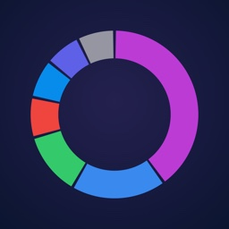
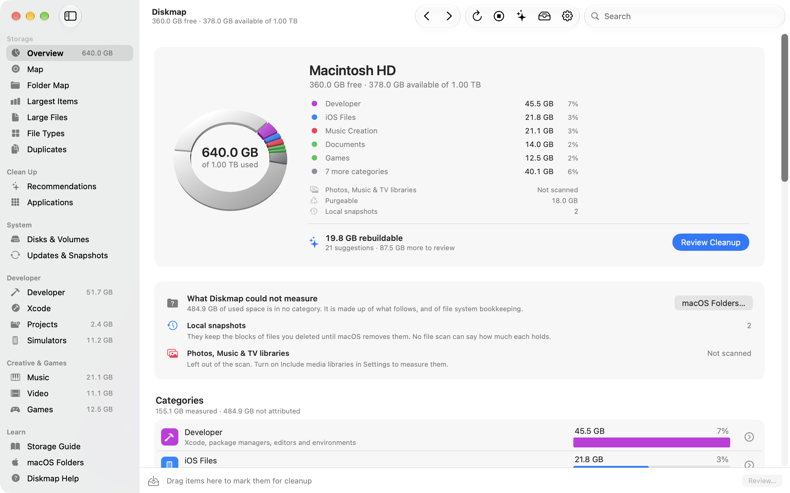
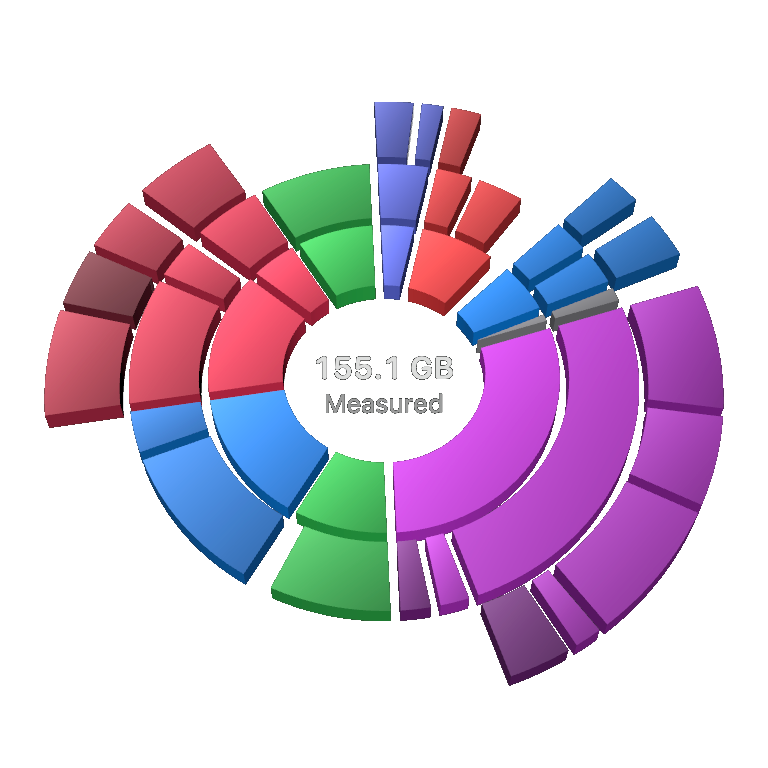
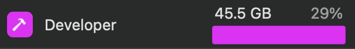
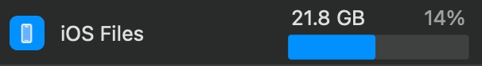
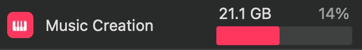
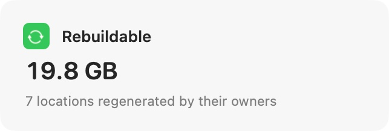
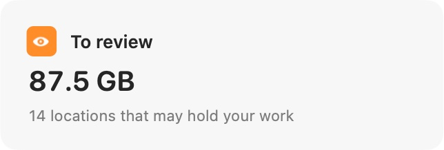
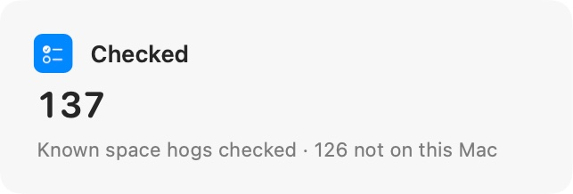

Find the bigger picture.
See storage by category, explore a folder, or drill into a ring map. The largest items are easy to find.

DiskmapNative storage management for macOS 26
A visual map of your storage. A closer look at what you can clear. Get the context you need before you make space.

Real Diskmap interface. Screenshots use synthetic example data.
See storage by category, explore a folder, or drill into a ring map. The largest items are easy to find.
Separate rebuildable caches and build data from files that need your attention. Review the consequences first.
Mark items, review the list, then confirm. Diskmap checks each item again before moving it to the Trash.
Diskmap in motion
From a complete overview to the details worth a closer look. Watch the Diskmap film.
A closer look
Explore the real app, from everyday storage questions to the tools that fill a developer’s Mac.
Explore the map
Drill into a category to see what it holds. The map and ranked list give every measured item its place.




Considered cleanup
See rebuildable items and review candidates, with an explanation of what each one contains.



Made for busy Macs
Inspect Xcode data, simulators, package caches, projects, containers, and AI tools in one place.
All screenshots show synthetic example data. Storage totals and cleanup opportunities vary by Mac.
Designed to stay local
Diskmap processes file names, sizes, and scan results on your Mac. The app has no advertising, analytics, or account sign-in.
Full Disk Access is optional. Without it, Diskmap measures the locations macOS allows and identifies what it could not read.
Read the app privacy policyExplore Diskmap, read the documentation, and build it from source.
View the project on GitHubRequires macOS 26 or later.